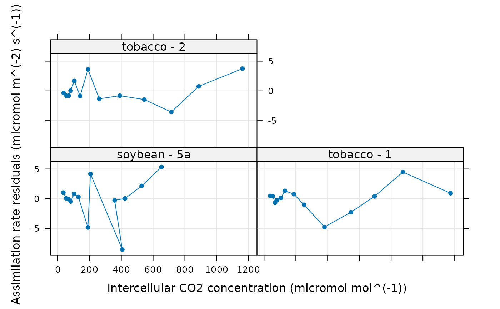
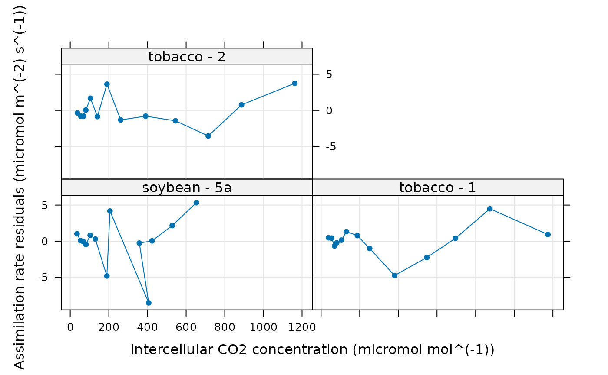

Fits a C3 assimilation model to an experimental curve
fit_c3_aci.RdFits a model to an experimentally measured C3 CO2 response curve using the
data in the exdf object along with a few other user-supplied
parameters. This function can accomodate alternative column names for the
variables taken from the Licor file in case they change at some point in the
future. This function also checks the units of each required column and will
produce an error if any units are incorrect.
Usage
fit_c3_aci(
replicate_exdf,
Ca_atmospheric,
a_column_name = 'A',
ca_column_name = 'Ca',
cc_column_name = 'Cc',
ci_column_name = 'Ci',
j_norm_column_name = 'J_norm',
kc_column_name = 'Kc',
ko_column_name = 'Ko',
oxygen_column_name = 'oxygen',
rd_norm_column_name = 'Rd_norm',
total_pressure_column_name = 'total_pressure',
vcmax_norm_column_name = 'Vcmax_norm',
sd_A = 'RMSE',
atp_use = 4.0,
nadph_use = 8.0,
curvature_cj = 1.0,
curvature_cjp = 1.0,
OPTIM_FUN = optimizer_deoptim(200),
lower = list(),
upper = list(),
fit_options = list(),
cj_crossover_min = NA,
cj_crossover_max = NA,
error_threshold_factor = 0.147,
calculate_confidence_intervals = TRUE,
remove_unreliable_param = TRUE
)Arguments
- replicate_exdf
An
exdfobject representing one CO2 response curve.- Ca_atmospheric
The atmospheric CO2 concentration (with units of
micromol mol^(-1)); this will be used byestimate_operating_pointto estimate the operating point.- a_column_name
The name of the column in
replicate_exdfthat contains the net assimilation inmicromol m^(-2) s^(-1).- ca_column_name
The name of the column in
replicate_exdfthat contains the ambient CO2 concentration inmicromol mol^(-1).- cc_column_name
The name of the column in
replicate_exdfthat contains the chloroplastic CO2 concentration inmicromol mol^(-1).- ci_column_name
The name of the column in
replicate_exdfthat contains the intercellular CO2 concentration inmicromol mol^(-1).- j_norm_column_name
The name of the column in
replicate_exdfthat contains the normalizedJvalues (with units ofnormalized to J at 25 degrees C).- kc_column_name
The name of the column in
replicate_exdfthat contains the Michaelis-Menten constant for rubisco carboxylation inmicromol mol^(-1).- ko_column_name
The name of the column in
replicate_exdfthat contains the Michaelis-Menten constant for rubisco oxygenation inmmol mol^(-1).- oxygen_column_name
The name of the column in
exdf_objthat contains the concentration of O2 in the ambient air, expressed as a percentage (commonly 21% or 2%); the units must bepercent.- rd_norm_column_name
The name of the column in
replicate_exdfthat contains the normalizedRdvalues (with units ofnormalized to Rd at 25 degrees C).- total_pressure_column_name
The name of the column in
replicate_exdfthat contains the total pressure inbar.- vcmax_norm_column_name
The name of the column in
replicate_exdfthat contains the normalizedVcmaxvalues (with units ofnormalized to Vcmax at 25 degrees C).- sd_A
A value of the standard deviation of measured
Avalues, or the name of a method for determining the deviation; currently, the only supported option is'RMSE'.- atp_use
The number of ATP molecules used per C3 cycle.
- nadph_use
The number of NADPH molecules used per C3 cycle.
- curvature_cj
A dimensionless quadratic curvature parameter greater than or equal to 0 and less than or equal to 1 that sets the degree of co-limitation between
WcandWj. A value of 1 indicates no co-limitation.- curvature_cjp
A dimensionless quadratic curvature parameter greater than or equal to 0 and less than or equal to 1 that sets the degree of co-limitation between
WcjandWp. A value of 1 indicates no co-limitation.- OPTIM_FUN
An optimization function that accepts the following input arguments: an initial guess, an error function, lower bounds, and upper bounds. It should return a list with the following elements:
par,convergence,value, and (optionally)message. Seeoptimizersfor a list of available options.- lower
A list of named numeric elements representing lower bounds to use when fitting. Values supplied here override the default values (see details below). For example,
lower = list(Vcmax_at_25 = 10)sets the lower limit forVcmax_at_25to 10 micromol / m^2 / s.- upper
A list of named numeric elements representing upper bounds to use when fitting. Values supplied here override the default values (see details below). For example,
upper = list(Vcmax_at_25 = 200)sets the upper limit forVcmax_at_25to 200 micromol / m^2 / s.- fit_options
A list of named elements representing fit options to use for each parameter. Values supplied here override the default values (see details below). Each element must be
'fit','column', or a numeric value. A value of'fit'means that the parameter will be fit; a value of'column'means that the value of the parameter will be taken from a column inexdf_objof the same name; and a numeric value means that the parameter will be set to that value. For example,fit_options = list(alpha_g = 0, Vcmax_at_25 = 'fit', Tp = 'column')means thatalpha_gwill be set to 0,Vcmax_at_25will be fit, andTpwill be set to the values in theTpcolumn ofexdf_obj.- cj_crossover_min
The minimum value of
Cc(in ppm) whereAjis allowed to become the overall rate-limiting factor. Ifcj_crossover_minis set toNA, this restriction will not be applied.- cj_crossover_max
The maximim value of
Cc(in ppm) whereWjis allowed to be smaller thanWc. Ifcj_crossover_maxis set toNA, this restriction will not be applied.- error_threshold_factor
To be passed to
confidence_intervals_c3_aciwhencalculate_confidence_intervalsisTRUE.- calculate_confidence_intervals
A logical value indicating whether or not to estimate confidence intervals for the fitting parameters using
confidence_intervals_c3_aci.- remove_unreliable_param
A logical value indicating whether or not to remove unreliable parameter estimates; see below for details.
Details
This function calls calculate_c3_assimilation to calculate
values of net assimilation. The user-supplied optimization function is used to
vary the values of alpha_g, alpha_old, alpha_s,
J_at_25, Rd_at_25, Tp, and Vcmax_at_25 to find
ones that best reproduce the experimentally measured values of net
assimilation. By default, the following options are used for the fits:
alpha_g: lower = 0, upper = 1, fit_option = 0alpha_old: lower = 0, upper = 1, fit_option ='fit'alpha_s: lower = 0, upper = 0.75, fit_option = 0Gamma_star: lower = 0, upper = 200, fit_option ='column'J_at_25: lower = 0, upper = 1000, fit_option ='fit'Rd_at_25: lower = 0, upper = 100, fit_option ='fit'Tp: lower = 0, upper = 40, fit_option ='fit'Vcmax_at_25: lower = 0, upper = 1000, fit_option ='fit'
With these settings, the "new" alpha parameters are set to 0, values of
Gamma_star are taken from the Gamma_star column of
replicate_exdf, and the other parameters are fit during the process
(see fit_options above).
An initial guess for the parameters is generated by calling
initial_guess_c3_aci as follows:
cc_threshold_rdis set to 100 micromol / mol.If
alpha_gis being fit, thealpha_gargument ofinitial_guess_c3_aciis set to 0.5; otherwise, the argument is set to the value specified by the fit options.If
alpha_oldis being fit, thealpha_oldargument ofinitial_guess_c3_aciis set to 0.5; otherwise, the argument is set to the value specified by the fit options.if
alpha_sis being fit, thealpha_sargument ofinitial_guess_c3_aciis set to0.3 * (1 - alpha_g); otherwise, the argument is set to the value specified by the fit options.If
Gamma_staris being fit, theGamma_starargument ofinitial_guess_c3_aciis set to 40; otherwise, the argument is set to the value specified by the fit options.
Note that any fixed values specified in the fit options will override the values returned by the guessing function.
The fit is made by creating an error function using
error_function_c3_aci and minimizing its value using
OPTIM_FUN, starting from the initial guess described above. The
optimizer_deoptim optimizer is used by default since it has been
found to reliably return great fits. However, it is a slow optimizer. If speed
is important, consider reducing the number of generations or using
optimizer_nmkb, but be aware that this optimizer is more likely
to get stuck in a local minimum.
The photosynthesis model represented by calculate_c3_assimilation is
not smooth in the sense that small changes in the input parameters do not
necessarily cause changes in its outputs. This is related to the final step in
the calculations, where the overall assimilation rate is taken to be the
minimum of three enzyme-limited rates. For example, if the assimilation rate
is never TPU-limited, modifying Tp will not change the model's
outputs. For this reason, derivative-based optimizers tend to struggle when
fitting C3 A-Ci curves. Best results are obtained using derivative-free
methods. It has been found that dfoptim::nmkb is often able to find a
good fit.
Sometimes the optimizer may choose a set of parameter values where one or more
of the potential limiting carboxylation rates (Wc, Wj, or
Wp) is never the smallest rate. In this case, the corresponding
parameter estimates (Vcmax, J, or alpha & Tp)
will be unreliable. It is also possible that the upper limit of the confidence
interval for a parameter is infinity; this also indicates an unreliable
parameter estimate. These criteria are used to determine the reliability of
each parameter estimate, which is indicated in the Vcmax_trust,
J_trust, alpha_g_trust, alpha_old_trust,
alpha_s_trust, and Tp_trust columns of the output from
fit_c3_aci, where a value of 0 indicates an unreliable estimate
and 1 indicates a reliable estimate. If remove_unreliable_param
is TRUE, the values of any parameters deemed unreliable will be set to
NA in the outputs from fit_c3_aci.
Once the best-fit parameters have been determined, this function also
estimates the operating value of `Cc from the atmospheric CO2
concentration atmospheric_ca using
estimate_operating_point, and then uses that value to estimate
the modeled An at the operating point via
calculate_c3_assimilation. It also estimates the
Akaike information criterion (AIC).
This function assumes that replicate_exdf represents a single
C3 A-Ci curve. To fit multiple curves at once, this function is often used
along with by.exdf and consolidate.
Value
A list with three elements:
fits: Anexdfobject including the original contents ofreplicate_exdfalong with several new columns:The fitted values of net assimilation will be stored in a column whose name is determined by appending
'_fit'to the end ofa_column_name; typically, this will be'A_fit'.Residuals (measured - fitted) will be stored in a column whose name is determined by appending
'_residuals'to the end ofa_column_name; typically, this will be'A_residuals'.Values of fitting parameters at 25 degrees C will be stored in the
J_at_25,Rd_at_25, andVcmax_at_25columns.The other outputs from
calculate_c3_assimilationwill be stored in columns with the usual names:alpha_g,alpha_old,alpha_s,Tp,Vcmax_tl,Rd_tl,J_tl,Wc,Wj,Wp,Vc,Ac,Aj, andAp.
fits_interpolated: Anexdfobject including the calculated assimilation rates at a fine spacing ofCivalues (step size of 1micromol mol^(-1)).parameters: Anexdfobject including the identifiers, fitting parameters, and convergence information for the A-Ci curve:The number of points where
Wc,Wj, andWpare each the smallest potential carboxylation are stored in then_Wc_smallest,n_Wj_smallest, andn_Wp_smallestcolumns.The best-fit values are stored in the
alpha_g,alpha_old,alpha_s,Tp,J_at_25,Rd_at_25, andVcmax_at_25columns. Ifcalculate_confidence_intervalsisTRUE, upper and lower limits for each of these parameters will also be included.For parameters that depend on leaf temperature, the average leaf-temperature-dependent values are stored in
J_tl_avg,Rd_tl_avg, andVcmax_tl_avg.Information about the operating point is stored in
operating_Cc,operating_Ci,operating_An, andoperating_An_model.The
convergencecolumn indicates whether the fit was successful (==0) or if the optimizer encountered a problem (!=0).The
fevalcolumn indicates how many cost function evaluations were required while finding the optimal parameter values.The residual stats as returned by
residual_statsare included as columns with the default names:dof,RSS,RMSE, etc.The Akaike information criterion is included in the
AICcolumn.
Examples
# Read an example Licor file included in the PhotoGEA package
licor_file <- read_gasex_file(
PhotoGEA_example_file_path('c3_aci_1.xlsx')
)
# Define a new column that uniquely identifies each curve
licor_file[, 'species_plot'] <-
paste(licor_file[, 'species'], '-', licor_file[, 'plot'] )
# Organize the data
licor_file <- organize_response_curve_data(
licor_file,
'species_plot',
c(9, 10, 16),
'CO2_r_sp'
)
# Specify an infinite mesophyll conductance (so `Cc` = `Ci`)
licor_file <- set_variable(
licor_file,
'gmc', 'mol m^(-2) s^(-1) bar^(-1)', value = Inf
)
# Calculate the total pressure in the Licor chamber
licor_file <- calculate_total_pressure(licor_file)
# Calculate Cc
licor_file <- apply_gm(licor_file)
# Calculate temperature-dependent values of C3 photosynthetic parameters
licor_file <- calculate_arrhenius(licor_file, c3_arrhenius_bernacchi)
# For these examples, we will use a faster (but sometimes less reliable)
# optimizer so they run faster
optimizer <- optimizer_nmkb(1e-7)
# We can fit just one curve from the data set, although it is rare to do this
one_result <- fit_c3_aci(
licor_file[licor_file[, 'species_plot'] == 'tobacco - 1', , TRUE],
Ca_atmospheric = 420,
OPTIM_FUN = optimizer
)
# We can fit the same curve, but also allow alpha_old and Gamma_star to vary
one_result_v2 <- fit_c3_aci(
licor_file[licor_file[, 'species_plot'] == 'tobacco - 1', , TRUE],
Ca_atmospheric = 420,
fit_options = list(Gamma_star = 'fit', alpha_old = 'fit'),
OPTIM_FUN = optimizer
)
# Fit all curves in the data set (it is more common to do this)
aci_results <- consolidate(by(
licor_file,
licor_file[, 'species_plot'],
fit_c3_aci,
Ca_atmospheric = 420,
OPTIM_FUN = optimizer
))
# View the fitting parameters for each species / plot
col_to_keep <- c(
'species', 'plot', # identifiers
'n_Wc_smallest', 'n_Wj_smallest', 'n_Wp_smallest', # number of points where
# each process is limiting
'Tp', 'J_at_25', 'Rd_at_25', 'Vcmax_at_25', # parameters scaled to 25 degrees C
'J_tl_avg', 'Rd_tl_avg', 'Vcmax_tl_avg', # average temperature-dependent values
'operating_Ci', 'operating_An', 'operating_An_model', # operating point info
'dof', 'RSS', 'MSE', 'RMSE', 'RSE', # residual stats
'convergence', 'convergence_msg', 'feval', 'optimum_val' # convergence info
)
aci_results$parameters[ , col_to_keep, TRUE]
#> species [UserDefCon] (NA) plot [UserDefCon] (NA)
#> 1 soybean 5a
#> 2 tobacco 1
#> 3 tobacco 2
#> n_Wc_smallest [identify_c3_unreliable_points] ()
#> 1 11
#> 2 9
#> 3 9
#> n_Wj_smallest [identify_c3_unreliable_points] ()
#> 1 2
#> 2 4
#> 3 4
#> n_Wp_smallest [identify_c3_unreliable_points] ()
#> 1 0
#> 2 0
#> 3 0
#> Tp [fit_c3_aci] (micromol m^(-2) s^(-1))
#> 1 NA
#> 2 NA
#> 3 NA
#> J_at_25 [fit_c3_aci] (micromol m^(-2) s^(-1))
#> 1 201.6663
#> 2 232.8359
#> 3 206.4824
#> Rd_at_25 [fit_c3_aci] (micromol m^(-2) s^(-1))
#> 1 3.277145e-08
#> 2 3.557254e-01
#> 3 3.816436e-01
#> Vcmax_at_25 [fit_c3_aci] (micromol m^(-2) s^(-1))
#> 1 119.8514
#> 2 145.3336
#> 3 124.2044
#> J_tl_avg [fit_c3_aci] (micromol m^(-2) s^(-1))
#> 1 283.2937
#> 2 320.7137
#> 3 285.9204
#> Rd_tl_avg [fit_c3_aci] (micromol m^(-2) s^(-1))
#> 1 4.628077e-08
#> 2 4.919454e-01
#> 3 5.307687e-01
#> Vcmax_tl_avg [fit_c3_aci] (micromol m^(-2) s^(-1))
#> 1 192.3885
#> 2 226.5082
#> 3 195.1110
#> operating_Ci [estimate_operating_point] (micromol mol^(-1))
#> 1 264.3297
#> 2 294.7032
#> 3 301.2673
#> operating_An [estimate_operating_point] (micromol m^(-2) s^(-1))
#> 1 31.00316
#> 2 37.51608
#> 3 31.57904
#> operating_An_model [fit_c3_aci] (micromol m^(-2) s^(-1))
#> 1 28.27311
#> 2 37.85424
#> 3 33.05719
#> dof [residual_stats] (NA) RSS [residual_stats] ((micromol m^(-2) s^(-1))^2)
#> 1 8 141.54127
#> 2 8 38.86807
#> 3 8 49.78449
#> MSE [residual_stats] ((micromol m^(-2) s^(-1))^2)
#> 1 10.887790
#> 2 2.989851
#> 3 3.829577
#> RMSE [residual_stats] (micromol m^(-2) s^(-1))
#> 1 3.299665
#> 2 1.729119
#> 3 1.956930
#> RSE [residual_stats] (micromol m^(-2) s^(-1)) convergence [fit_c3_aci] ()
#> 1 4.206264 0
#> 2 2.204202 0
#> 3 2.494607 0
#> convergence_msg [fit_c3_aci] () feval [fit_c3_aci] ()
#> 1 Successful convergence 414
#> 2 Successful convergence 268
#> 3 Successful convergence 313
#> optimum_val [fit_c3_aci] ()
#> 1 33.96587
#> 2 25.56516
#> 3 27.17410
# View the fits for each species / plot
plot_c3_aci_fit(aci_results, 'species_plot', 'Ci')
 # View the residuals for each species / plot
lattice::xyplot(
A_residuals ~ Ci | species_plot,
data = aci_results$fits$main_data,
type = 'b',
pch = 16,
auto = TRUE,
grid = TRUE,
xlab = paste0('Intercellular CO2 concentration (', aci_results$fits$units$Ci, ')'),
ylab = paste0('Assimilation rate residuals (', aci_results$fits$units$A_residuals, ')')
)

# In some of the curves above, there are no points where carboxylation is TPU
# limited. Estimates of Tp are therefore unreliable and are removed.
# View the residuals for each species / plot
lattice::xyplot(
A_residuals ~ Ci | species_plot,
data = aci_results$fits$main_data,
type = 'b',
pch = 16,
auto = TRUE,
grid = TRUE,
xlab = paste0('Intercellular CO2 concentration (', aci_results$fits$units$Ci, ')'),
ylab = paste0('Assimilation rate residuals (', aci_results$fits$units$A_residuals, ')')
)

# In some of the curves above, there are no points where carboxylation is TPU
# limited. Estimates of Tp are therefore unreliable and are removed.